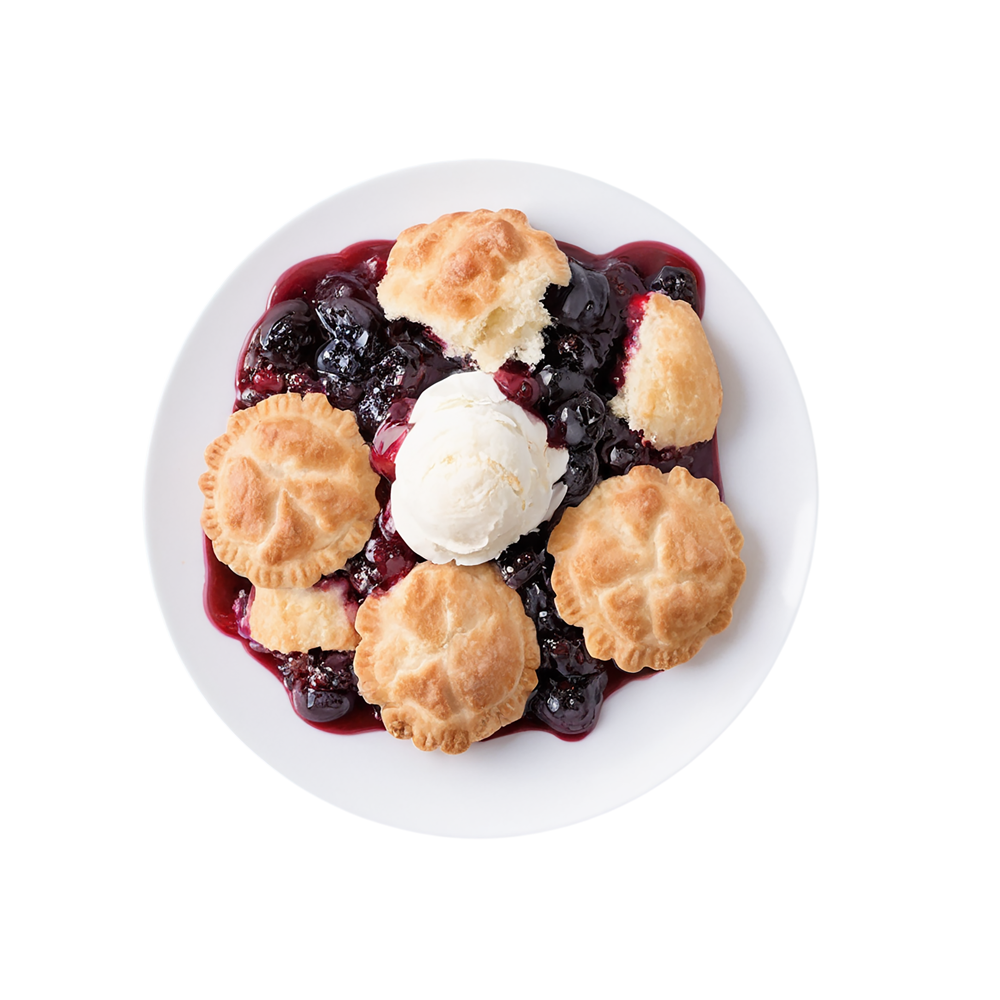

Blackberry Cobbler

Blackberry Cobbler (image courtesy of
IMAGEMO DESIGN STUDIO
on
Freeimages.com)
Ain't nothing like a blackberry cobbler with a dollop of vanilla ice
cream. The vanilla ice cream is optional, but who are we kidding!
Ingredients
- 9 x 13 baking dish
- 1 stick of butter
- (Optional) Vanilla ice cream
Berry Mixture
- 1 1/2 qts of blackberries
- 1 1/2 cups sugar
- Water
Batter Mixture
- Milk
- 1 1/4 cups Self-rising flour
- 3/4 cup Sugar
Steps
- Wash berries.
- Preheat the oven to 375°F.
- Place berries and sugar in a pot.
-
Cover with water where the top of the berries are just exposed
to air.
- Heat the berries, sugar, and water slowly.
While the berries are cooking...
- Melt the stick of butter in the baking dish
-
Prepare the batter by mixing the sugar and flour while adding
milk. You've added enough milk when the batter is about cake
batter consistency.
-
When the berries are heated thoroughly, remove them from heat.
- Pour the batter into the baking dish.
- Spoon the berry mixture over the batter.
- Bake at 375°F until the top is golden brown.
Home Page